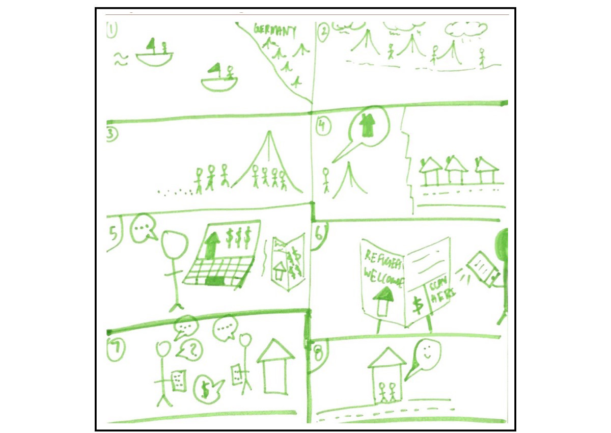
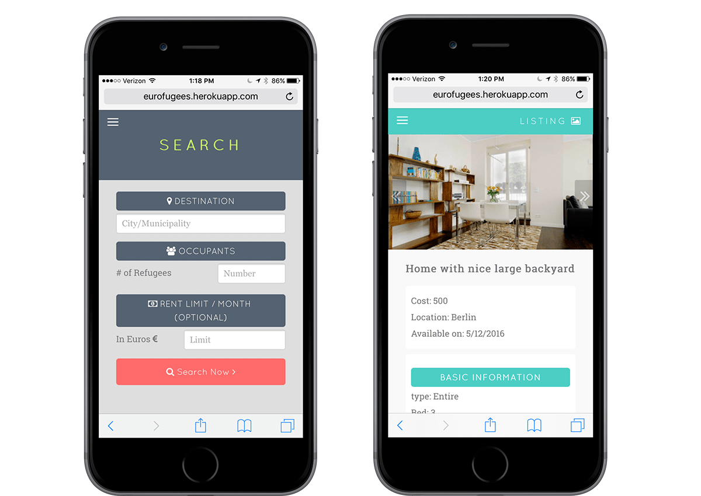

WORK


EuroFugees
ABOUT
2015 had the world’s worst refugee crisis since WWII. There was a huge influx of refugees into Europe and they will soon be ready to move out of camps into houses. EuroFugees helps connect those refugees in need to local europeans who are looking to rent out or help those refugees and welcome them into their homes.
This was a project for my interaction design class and at the end of the course, we presented our projects to a crowd of 400 people. Out of 80 teams in the class, our team won an award for Best Social Impact.
PROCESS
Each member on the team focused on a different part of building and designing the app. Working remotely with Syrian Refugees in Germany we conducted research with them, and then l moved to interaction design, visual design, prototyping, usability testing, iteration, and then production.
NEEDFINDING
We interviewed Syrian Refugees in Europe. Many had mentioned the extensive and expensive process to finding housing. With security and cost being a main issue. Refugees would have to pay a trusted middleman to help refugees find housing. These middlemen spoke the native language and made the process smoother, though it was pricey, costing upwards of a month's rent.
One of the initial storyboards that came with interviewing refugees.
PROTOTYPING
The main idea was to display important information about each listing on a card with a photo of the property. Important information included rent cost, location, and number of bedrooms/bathrooms. This goal was to only show the relevant and important information to the user first, as users judge quickly based on a few factors. I started with some rough sketches on paper, and then moved on to high fidelity prototypes.

Initial property listing paper prototype

First High Fidelity Prototypes
USER TESTING
Users generally enjoyed using the product, though a main concern with the app was with the initial search experience was too limiting and asked too many questions. The feedback we recieved from users was that they wanted to get a general idea of the housing market first, see what was available, then focus their search on what they specifically wanted from a property through a refine feature.

Refine feature that was added after initial user testing
PRODUCTION
Below is the final product that was presented to the class. It looks vastly different, as we went through multiple interations and had to design within the scope of the class, which is why the interface looks very different form the initial protoypes.

Final product that was presented to the professor, class, and the rest of the teaching staff
Ishqr
ABOUT
Ishqr is an online dating site and iOS app for millennial Muslims. Working remotely, I conducted usability testing prior to the release of the iOS app. I am currently working on the development of the Ishqr Blog as well. Other notable projects include making the promotional video for the realease of the iOS app.
PROCESS
This was my first jab at usability testing and user experience, as I was new to the Ishqr team. There was no clear cut process to testing the app, I simply used the app on a daily basis, made a note of what was "annoying" and relayed that to the development team.
Though I had no formal terms for these things at the time, I was observant of a few key things, which later I learned were part of Nielsen's Heurestics.
- Violation of Expectations
- Show system status, which I had previosly called "I'm lost in the app"
- Recognition Over Recall, which at the time I called "I don't remember what I did two screens ago"